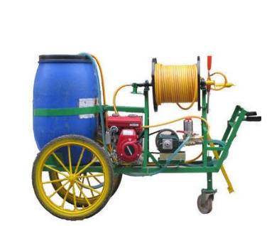

AGRICULTURAL EQUIPMENT
Uses of this Agriculture Equipment will increase farmer production and profits
Today, the farmers who are doing smart farming are making good profits by using new farming tools made with modern technology, which is increasing their income.
You too become a smart farmer and increase your income by using agricultural implement that give better results in this agricultural production.
At this time companies have also reduced the prices of their products to benefit the farmers.
1. 2 & 4 Stroke Sprayer Pump (Agricultural Sprayer)

Agricultural sprayers used in agricultural work are available in 2 and 4 stroke spray pumps in the market.
These have been launched in the market with some features.
With this help, the farmer can easily spray insecticides on crops in his fields.
Apart from this, they can also be used for the cleanliness of the environment.
Talking about the price of 2 & 4 Stroke power supply sprayer, it is available in an affordable price range at Rs. 9,000 – Rs. 22,000.
The price of 2 & 4 Stroke Sprayer Pump is very convenient and budget-friendly, also very easy to buy.
2 & 4 Stroke spray pumps, both come in high quality, but 4 stroke spray pumps have twice the capacity than 2 stroke spray pumps.
Now let’s talk about 4 stroke spray pumps, these are high capacity pumps which have twice the capacity of 2 stroke spray pumps. Rajsan – 89-1000, 4 stroke power supply spar is now available in the market for Rs 11,500 instead of 11,000, and Sparman-1000 power supply spar 12,000 for Rs 11,500.
Thus, the prices of both these 2 and 4 stroke spray pumps (agricultural sprayers) have been reduced significantly, which the farmers can avail.
2. Engine Driven Portable Agricultural Sprayer
A special sprayer is an engine-driven portable sprayer in agricultural sprayers.
It is also a useful sprayer used in disinfectant and hygiene operations. It is shaped like an electric motor.
It can be placed comfortably in a low place. It has been launched in two categories with many attractive features.
It has an engine-powered portable sprayer and the other is a disinfectant / sanitary sprayer engine-driven portable sprayer.
There are different rates in their market according to their special features, capacity and brand.
With the engine-powered portable sprayers, it comes in a reasonable price range of Rs. Rs. 50,000 – Rs. 1.25 Lakh.
This price range considers every model of Engine Driven Portable Agricultural Sprayer.
3. Mini sprayer
These sprayers are proving to be extremely useful for small farmers due to their manual operation. It costs neither engine nor electricity. For this reason, every small farmer can use them. There are many types of mini sprayers in the market which are available in 1.2 liters to 100 liters. The farmer can buy it from the market at very cheap prices according to its utility. Different companies have their own rates as follows.
These mini sprayers help you to reduce the work of spreading the water from hands.
With the adorable and handy design of mini sprayer, its price comes according to tank capacity.
Here is the table below.
Tank capacity of Mini Sprayer Price ( low to high ) all India
1 liters to 100 liters Rs. 2,000* up to Rs. 43,110*
4. Trolley Pump

The trolley pump is more useful for those farmers who have a lot of land for cultivation. In this, disinfectants can be sprayed in a short time. This will save the labor and time of the farmers and increase the yield and increase the profits.
This pump is definitely expensive, but its quality and usage are worth noting.
The best trolley pump available in the market.
It is a portable and trolley type spray pump.
According to its best features, no one would compromise with its price.
It comes at a very affordable price range which starts from Rs. 19,000* up to Rs. 60,000*.
It may vary depending on the model variants and horsepower category.
5. Trailer sprayer

Trailer mounted sprayers or tractor mounted sprayers are those used for mounting trailers and tractors. The farmer should choose this in view of its necessity and ease of use. There are many types of tractor sprayers available in the market which is extremely useful.
According to its features and use, trailer sprayer price starts from Rs.1,00,000* to Rs. 3.00 lakh*.
This price can vary on the brand, model, weight and tank capacity.